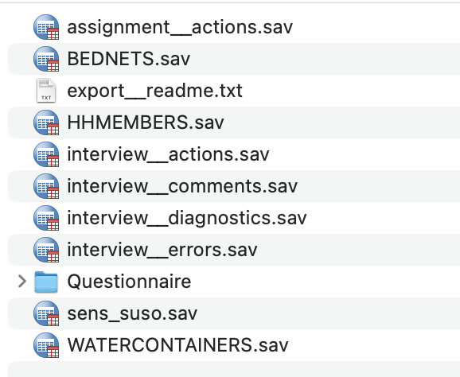

#To install the packages used in this guide, uncomment and run the lines below.
#install.packages(haven) # For importing SPSS files into R
#install.packages(janitor) # For cleaning/housekeeping datasets
#install.packages(dplyr) # For wrangling and summarising datasets
#install.packages(tidyr) # For reshaping datasets
#install.packages(ggplot2) # For plotting and visualization
#install.packages(questionr) # For easy frequency and descrptive tables
library(haven)
library(janitor)
library(dplyr)
library(tidyr)
library(questionr)
library(ggplot2)Survey Solutions and UNHCR’s SENS
Sample data analysis
Introduction
The Standardised Expanded Nutrition Survey (SENS) is a health and nutrition survey by the United Nation’s High Commission for Refugees (UNHCR), aimed at improving nutrition among refugee populations by gathering quality data to develop timely policies and interventions.
This document provides a brief guide to preparing SENS data for data analysis when the data-source is Survey Solutions. It assumes that the reader is familiar with Survey Solutions and has implemented (or will implement) a SENS activity using the standard Survey Solutions SENS template (will be linked when public).
The statistical software that will be used in this guide is R, an open-source language for graphical and statistical computing. All examples and code will be written in R, with the assistance of some key packages. All code was developed and tested using the R version 4.1.1. Please ensure that your local R installation is version 4 or higher.
In addition, this guide will make heavy use of the Tidyverse, which is a set of packages and style-guidelines for data analysis in R. The two main Tidyverse packages used in this guide are dplyr, for data wrangling, and ggplot2, for plots and graphs. The ‘R Code: Preparation’ section contains more information about these and other R packages used in this guide.
Structure of Exported Data
The first step is exporting and downloading the survey data from Survey Solutions. The details of exporting data will not be discussed here but documentation can be found in the official Survey Solutions documentation site.
The image below displays all survey and system-generated files that are extracted from the Survey Solutions export.

For this guide, the files have been exported in SPSS format. The main survey files are:
- sens_suso.sav - the base file containing all household-level items. The modules included at this level are
- Demography (M. 1)
- Food Security (M. 5)
- Mosquito Net (M. 6)
- WASH (M. 7)
- HHMEMBERS.sav - the individual-level file containing individual-level items. These include child and woman questionnaire data and modules:
- Anthropometry & Health (M. 2) - Child and Woman
- Anaemia (M. 3) - Child and Woman
- IYCF (m. 4) - Child.
- BEDNETS.sav - information on bed nets from the Mosquito Nets module.
- WATERCONTAINERS.sav - information on household water storage containers from the WASH module.
For information on the system-generated Survey Solutions file, please refer to the official documentation.
R Code: Preparation
Installing and loading packages
Several very useful R packages will be used in this guide. These should be installed (if not done so already) and then loaded:
Importing and merging survey files
It is assumed that you have downloaded and extracted the SENS survey files into a folder called SENS_FILES in your local working directory. These files can now be worked with. What follows in this subsection is some basic preparation of the survey data to facilitate further analysis.
#import files from local directory
sens_hh <- read_sav('./SENS_FILES/sens.sav')
sens_ind <- read_sav('./SENS_FILES/HHMEMBERS.sav')
#add household-size categorical variable
sens_hh <- mutate(sens_hh,
HHSIZE_CAT = case_when(
HHSIZE <= 4 ~ '1-4',
HHSIZE <= 6 ~ '5-6',
HHSIZE <= 9 ~ '7-9',
HHSIZE >= 10 ~ '>= 10')
)
#join household and individual level data frames
sens_df <- left_join(sens_hh, sens_ind, by = 'interview__key')In the above code, the following things take place:
- The survey base/household-level file and the individual-level file are imported using the
read_savfunction from thehavenpackaged and saved in R objects as data frames. - A derived categorical variable of household size is created and attached to the household-level data frame.
- The household and individual level data frames are merged*, using
dplyr’sleft_join,into a single data frame namedsens_df.- The joining variable is interview__key, which is a key generated by Survey Solutions to uniquely identify interview cases. In this particular context, the interview__key is unique at the household level, meaning that each survey household can be distinctly identified by its interview__key.
*For more information on merges and joins with dplyr, see here.
Following, we create a basic function for displaying nicely formatted tables.
# format a data frame using the {kableExtra} package
formattedTable <- function(df, capt){
df |>
kbl(caption = capt) |>
kable_material("hover", full_width = F) |>
kable_styling(font_size = 13)
}This formatting is made possible by the kableExtra package. The created formattedTable function takes in two arguments:
- df - the data frame or table to display.
- capt - the caption or title for the table.
R Code: Analysis Demo
Module 1: Demography
Response rates are calculated from the consent (MDCCONST) variable. The function freq from the questionr package is used to produce easy frequency tables with labelled values.
The result is displayed with the help of our formattedTable function.
#derive frequencies
response_freq <- freq(sens_hh["MDCCONST"])
# output the results in a formatted table
formattedTable(response_freq, 'Household Consent')| n | % | val% | |
|---|---|---|---|
| [1] Yes | 1 | 100 | 100 |
| [2] No | 0 | 0 | 0 |
| [3] Absent | 0 | 0 | 0 |
| [-999999999] missing | 0 | 0 | 0 |
#summarise survey data on household totals
survey_totals <- summarise(sens_hh,
`Total Surveyed` = sum(HHSIZE, na.rm = T),
`Total U2` = sum(TOTU2, na.rm = T),
`Total U5` = sum(TOTU5, na.rm = T),
`Total 5-14` = sum(TOT514, na.rm = T),
`Total 15-64` = sum(TOT1564, na.rm = T),
`Total 65+` = sum(TOT65OLD, na.rm = T),
`Total Pregnant` = sum(TOTPREG, na.rm = T))
#pivot the table from wide to long format
survey_totals <- pivot_longer(survey_totals,
cols = everything(),
names_to = "Household Totals",
values_to = "Result")
# output the results in a formatted table
formattedTable(survey_totals, 'Household Totals')| Household Totals | Result |
|---|---|
| Total Surveyed | 4 |
| Total U2 | 0 |
| Total U5 | 0 |
| Total 5-14 | 0 |
| Total 15-64 | 4 |
| Total 65+ | 0 |
| Total Pregnant | 1 |
Frequencies of household sizes.
questionr::freq(sens_df$HHSIZE_CAT) |>
kbl(caption = "Household Size") |>
kable_material("hover", full_width = F) |>
kable_styling(font_size = 13)| n | % | val% | |
|---|---|---|---|
| 1-4 | 4 | 100 | 100 |